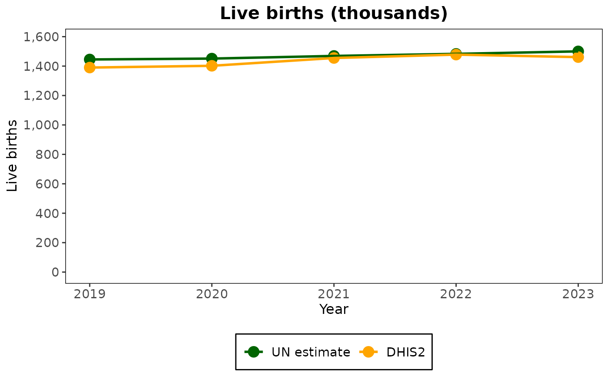
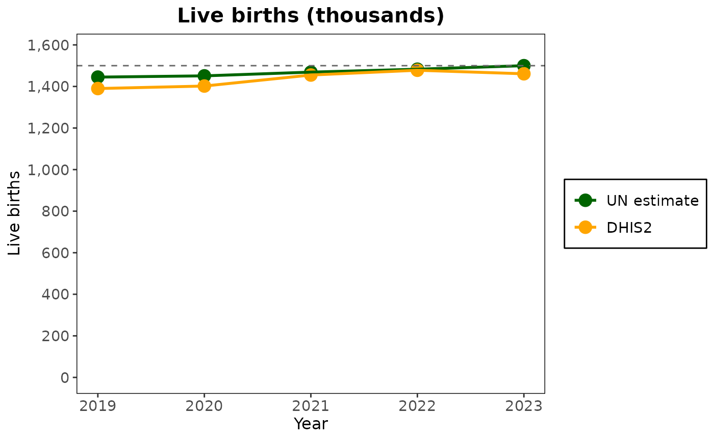

Draws one line with points for each of several columns of a data frame against a shared x column, in the package's plot theme. The y axis is scaled to the data: it starts at zero when all values are positive and leaves some room above the highest value.
Usage
plot_line_graph(
.data,
x,
y_vars,
title,
y_title,
x_title,
legend_labels,
hline = NULL,
hline_style = "dashed",
options = NULL,
...
)Arguments
- .data
A data frame.
- x
The column name for the x-axis (e.g., "year").
- y_vars
Vector of column names for the y-axis data.
- title
Plot title.
- y_title
Label for the y-axis.
- x_title
Label for the x-axis.
- legend_labels
Vector of labels for the legend (must match y_vars length).
- hline
Optional numeric value for a horizontal reference line.
- hline_style
Style of the horizontal line.
- options
(Optional) A
cd_chart_options()object: text, legend, fonts and sizes a user changed. Applied last, so it wins over the arguments above. Default isNULL.- ...
Chart options (see
cd_chart_options()) given by name, applied as withoptions.
Examples
births <- data.frame(
year = 2019:2023,
un = c(1445, 1451, 1469, 1483, 1500),
dhis2 = c(1390, 1402, 1455, 1478, 1461)
)
plot_line_graph(births, x = "year", y_vars = c("un", "dhis2"), title = "Live births (thousands)",
y_title = "Live births", x_title = "Year", legend_labels = c("UN estimate", "DHIS2"))

plot_line_graph(births, x = "year", y_vars = c("un", "dhis2"), title = "Live births (thousands)",
y_title = "Live births", x_title = "Year", legend_labels = c("UN estimate", "DHIS2"),
hline = 1500, legend_position = "right")
